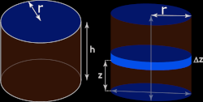

Cilindro
A cylinder is a geometric three-dimensional object having two parallel and congruent circular bases connected by a curved surface (which is formed by the line segments joining the respective points of the bases). There are two types of cylinders:
Right circular cylinder;
Oblique cylinder.
The formula for the volume, V, of a cylinder is:
V = πr2h
where r is radius of the base and h is the height of the cylinder.
Volume of a Right Circular Cylinder using integration formula
For a right circular cylinder, if its height (h) and base radius (R) is given, then its volume using integration can be given as shown below. Consider a volume element as shown in the figure at right, which is at distance z from the center of the cylinder and has thickness dz. The volume of this element is equal to its base area times the thickness.
Volume of element (dV) = Area of base of the element × Thickness = (πr2) dz
Summing up the volume of all such elements will give us the volume of a cylinder. Therefore, the volume of a cylinder is equal to,
Cilindro Obliquo
Tramite il principio di Cavalieri si calcola il volume del cilindro obliquo, che sarà V = Bh: